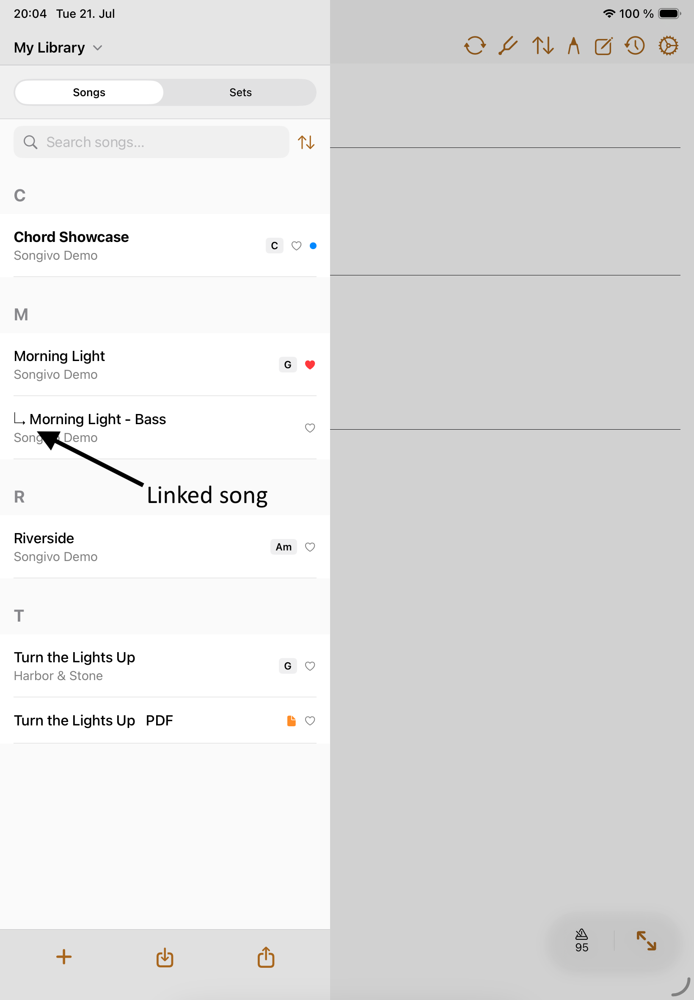
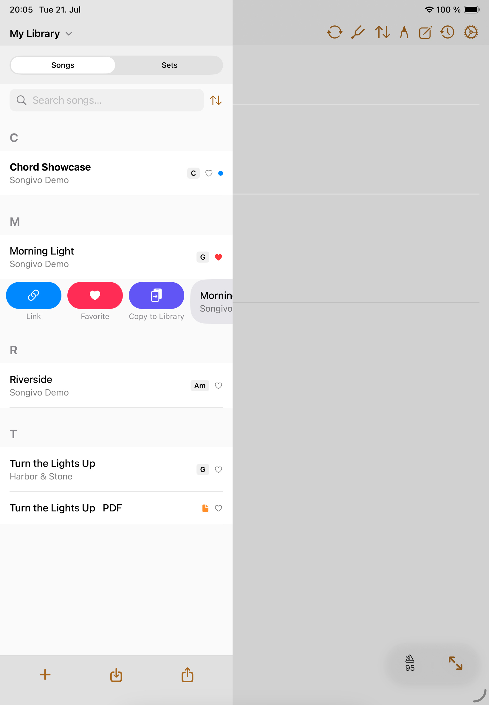

Library
Link Songs
Linked songs keep related charts together while preserving each song as its own library item.
Use links when a song needs more than one chart—for example, separate bass tabs or an intro.

Create a link
- Open the correct personal or band library.
- Swipe right on the chart you want to link.
- Tap Link, then choose the chart that should be the main song.

Library boundaries
- Links belong to the selected library context.
- Personal links and band-library links stay independent.
- A linked song cannot also be the main song of another linked group.
- Unlink a song when it should return to standalone performance navigation.